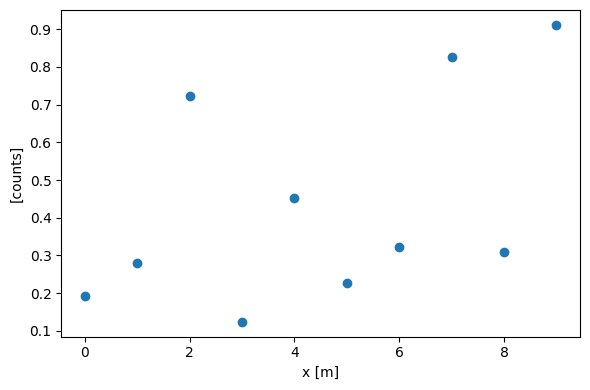

Getting Started#
Running Beamlime#
Run the beamlime command, and specify which workflow to use. Usually this would be done from a terminal. The current setup plots the results of the workflow and saves them to a file, which can we specify using the --image-path flag:
[1]:
!beamlime \
--workflow dummy \
--image-path reduction-result
[03/07/24 13:04:09] INFO Application | Start running ]8;id=21345;file:///home/runner/work/beamlime/beamlime/.tox/docs/lib/python3.10/site-packages/beamlime/applications/base.py\base.py]8;;\:]8;id=561101;file:///home/runner/work/beamlime/beamlime/.tox/docs/lib/python3.10/site-packages/beamlime/applications/base.py#289\289]8;;\
Application...
INFO DataStreamSimulator | Data streaming ]8;id=500230;file:///home/runner/work/beamlime/beamlime/.tox/docs/lib/python3.10/site-packages/beamlime/applications/daemons.py\daemons.py]8;;\:]8;id=468731;file:///home/runner/work/beamlime/beamlime/.tox/docs/lib/python3.10/site-packages/beamlime/applications/daemons.py#39\39]8;;\
started...
INFO DataStreamSimulator | Sent 1 th ]8;id=699313;file:///home/runner/work/beamlime/beamlime/.tox/docs/lib/python3.10/site-packages/beamlime/applications/daemons.py\daemons.py]8;;\:]8;id=205891;file:///home/runner/work/beamlime/beamlime/.tox/docs/lib/python3.10/site-packages/beamlime/applications/daemons.py#45\45]8;;\
chunk, with 28 pieces.
INFO DataReductionHandler | Received, 28 ]8;id=912266;file:///home/runner/work/beamlime/beamlime/.tox/docs/lib/python3.10/site-packages/beamlime/applications/handlers.py\handlers.py]8;;\:]8;id=871645;file:///home/runner/work/beamlime/beamlime/.tox/docs/lib/python3.10/site-packages/beamlime/applications/handlers.py#44\44]8;;\
pieces of Events
INFO DataStreamSimulator | Sent 2 th ]8;id=215649;file:///home/runner/work/beamlime/beamlime/.tox/docs/lib/python3.10/site-packages/beamlime/applications/daemons.py\daemons.py]8;;\:]8;id=436927;file:///home/runner/work/beamlime/beamlime/.tox/docs/lib/python3.10/site-packages/beamlime/applications/daemons.py#45\45]8;;\
chunk, with 28 pieces.
[03/07/24 13:04:10] INFO PlotSaver | Received ]8;id=566643;file:///home/runner/work/beamlime/beamlime/.tox/docs/lib/python3.10/site-packages/beamlime/applications/handlers.py\handlers.py]8;;\:]8;id=369246;file:///home/runner/work/beamlime/beamlime/.tox/docs/lib/python3.10/site-packages/beamlime/applications/handlers.py#93\93]8;;\
histogram, saving into
reduction-result...
INFO DataStreamSimulator | Sent 3 th ]8;id=315859;file:///home/runner/work/beamlime/beamlime/.tox/docs/lib/python3.10/site-packages/beamlime/applications/daemons.py\daemons.py]8;;\:]8;id=185689;file:///home/runner/work/beamlime/beamlime/.tox/docs/lib/python3.10/site-packages/beamlime/applications/daemons.py#45\45]8;;\
chunk, with 28 pieces.
INFO DataReductionHandler | Received, 28 ]8;id=38270;file:///home/runner/work/beamlime/beamlime/.tox/docs/lib/python3.10/site-packages/beamlime/applications/handlers.py\handlers.py]8;;\:]8;id=627467;file:///home/runner/work/beamlime/beamlime/.tox/docs/lib/python3.10/site-packages/beamlime/applications/handlers.py#44\44]8;;\
pieces of Events
INFO DataStreamSimulator | Sent 4 th ]8;id=110387;file:///home/runner/work/beamlime/beamlime/.tox/docs/lib/python3.10/site-packages/beamlime/applications/daemons.py\daemons.py]8;;\:]8;id=706246;file:///home/runner/work/beamlime/beamlime/.tox/docs/lib/python3.10/site-packages/beamlime/applications/daemons.py#45\45]8;;\
chunk, with 28 pieces.
INFO DataReductionHandler | Received, 28 ]8;id=75317;file:///home/runner/work/beamlime/beamlime/.tox/docs/lib/python3.10/site-packages/beamlime/applications/handlers.py\handlers.py]8;;\:]8;id=241388;file:///home/runner/work/beamlime/beamlime/.tox/docs/lib/python3.10/site-packages/beamlime/applications/handlers.py#44\44]8;;\
pieces of Events
INFO DataStreamSimulator | Sent 5 th ]8;id=273294;file:///home/runner/work/beamlime/beamlime/.tox/docs/lib/python3.10/site-packages/beamlime/applications/daemons.py\daemons.py]8;;\:]8;id=434826;file:///home/runner/work/beamlime/beamlime/.tox/docs/lib/python3.10/site-packages/beamlime/applications/daemons.py#45\45]8;;\
chunk, with 28 pieces.
INFO PlotSaver | Received ]8;id=5891;file:///home/runner/work/beamlime/beamlime/.tox/docs/lib/python3.10/site-packages/beamlime/applications/handlers.py\handlers.py]8;;\:]8;id=942051;file:///home/runner/work/beamlime/beamlime/.tox/docs/lib/python3.10/site-packages/beamlime/applications/handlers.py#93\93]8;;\
histogram, saving into
reduction-result...
INFO DataStreamSimulator | Data streaming ]8;id=729253;file:///home/runner/work/beamlime/beamlime/.tox/docs/lib/python3.10/site-packages/beamlime/applications/daemons.py\daemons.py]8;;\:]8;id=317421;file:///home/runner/work/beamlime/beamlime/.tox/docs/lib/python3.10/site-packages/beamlime/applications/daemons.py#63\63]8;;\
finished...
INFO DataReductionHandler | Received, 28 ]8;id=518133;file:///home/runner/work/beamlime/beamlime/.tox/docs/lib/python3.10/site-packages/beamlime/applications/handlers.py\handlers.py]8;;\:]8;id=482823;file:///home/runner/work/beamlime/beamlime/.tox/docs/lib/python3.10/site-packages/beamlime/applications/handlers.py#44\44]8;;\
pieces of Events
INFO PlotSaver | Received ]8;id=558954;file:///home/runner/work/beamlime/beamlime/.tox/docs/lib/python3.10/site-packages/beamlime/applications/handlers.py\handlers.py]8;;\:]8;id=370030;file:///home/runner/work/beamlime/beamlime/.tox/docs/lib/python3.10/site-packages/beamlime/applications/handlers.py#93\93]8;;\
histogram, saving into
reduction-result...
INFO DataReductionHandler | Received, 28 ]8;id=323173;file:///home/runner/work/beamlime/beamlime/.tox/docs/lib/python3.10/site-packages/beamlime/applications/handlers.py\handlers.py]8;;\:]8;id=103749;file:///home/runner/work/beamlime/beamlime/.tox/docs/lib/python3.10/site-packages/beamlime/applications/handlers.py#44\44]8;;\
pieces of Events
INFO PlotSaver | Received ]8;id=756594;file:///home/runner/work/beamlime/beamlime/.tox/docs/lib/python3.10/site-packages/beamlime/applications/handlers.py\handlers.py]8;;\:]8;id=959468;file:///home/runner/work/beamlime/beamlime/.tox/docs/lib/python3.10/site-packages/beamlime/applications/handlers.py#93\93]8;;\
histogram, saving into
reduction-result...
INFO PlotSaver | Received ]8;id=993003;file:///home/runner/work/beamlime/beamlime/.tox/docs/lib/python3.10/site-packages/beamlime/applications/handlers.py\handlers.py]8;;\:]8;id=630116;file:///home/runner/work/beamlime/beamlime/.tox/docs/lib/python3.10/site-packages/beamlime/applications/handlers.py#93\93]8;;\
histogram, saving into
reduction-result...
INFO Application | Finished running ]8;id=283328;file:///home/runner/work/beamlime/beamlime/.tox/docs/lib/python3.10/site-packages/beamlime/applications/base.py\base.py]8;;\:]8;id=40580;file:///home/runner/work/beamlime/beamlime/.tox/docs/lib/python3.10/site-packages/beamlime/applications/base.py#298\298]8;;\
0.7628452777862549...
The dummy workflow returns a single result named “random-counts”, which is added as a suffix to the output file name:

Adding workflows#
Python packages can add workflows as plugins to Beamlime. To do this, create a Python package with a beamlime.stateless entry point in the pyproject.toml file. This is how the “dummy” workflow is added to Beamlime:
# In beamlime's pyproject.toml
[project.entry-points."beamlime.stateless"]
dummy = "beamlime.stateless_workflow:dummy_workflow"
Above, ‘dummy’ is the name of the workflow (which can then be passed to beamlime --workflow), and ‘beamlime.stateless_workflow’ is the name of the Python package and module containing the workflow. As an example, for a Loki workflow plugin provided by esssans, the entry point might look as follows:
# In esssans' pyproject.toml
[project.entry-points."beamlime.stateless"]
ess-loki = "ess.sans.loki:live_workflow"
where live_workflow must adhere to the beamlime.StatelessWorkflow protocol:
[2]:
import inspect
from beamlime import StatelessWorkflow
print(inspect.getsource(StatelessWorkflow))
class StatelessWorkflow(Protocol):
"""
Protocol for stateless workflows.
Can be implemented by a class or a function in plugins, in the
`beamlime.stateless` entry point group.
"""
def __call__(self, group: JSONGroup) -> WorkflowResult:
pass
This can be fulfilled by a class or a function, as long as it takes a JSONGroup and returns a beamlime.WorkflowResult.